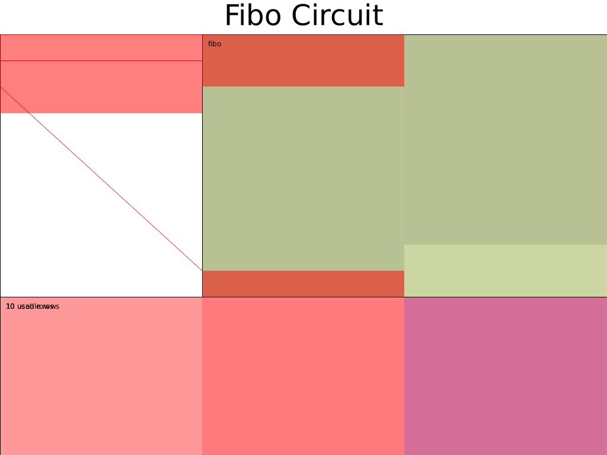
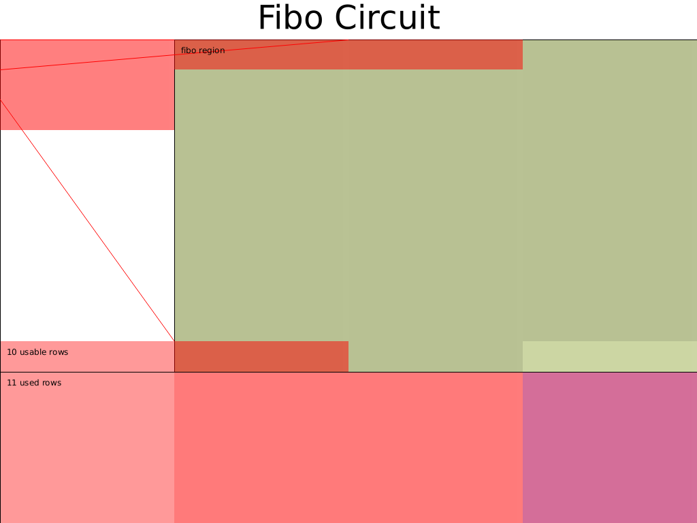

- 作者: @Po@Ethstorage.io
- 时间: 2023-10-24
- 校对: @Demian
进阶电路布局
在之前的教程中，电路行数相对较少，且相邻 region 之间所采用的 custom gate 也不一样，因此我们可以一行行地手动填入 witness 。本节，我们则考虑相邻 region 都是采用同一种门的电路——Fibonacci 数列，学习采用循环来复用函数填入 witness 代码；
在此之后，考虑另一种电路布局的 Fibonacci 电路实现，来初步体会如何优化设计电路布局。
Fibonacci
问题定义
Fibonacci 数列是证明如下问题:
public inputs: a, b, f(N)
constraints:
f(0) = a
f(1) = b
f(n) = f(n-1) + f(n-2), n = 2,...,N
注意：N 为 struct Circuit 中的电路配置，它不是电路结构的一部分，只是用来辅助生成电路，不同的 N 对应着不同的电路，N 确定之后，可以认为电路的 verification key 就确定了。代码如果开源，任何人都可以阅读到这个 N 的取值。
举个例子， 是已知的 public input，Prover 想生成一个 proof，证明他知道
这里读者可能会有疑问，我都能口算出来的结果，还有必要 Prove 嘛？这里不必过分纠结这个例子的实际用途，暂时 focus 到 Halo2 API 和电路布局即可，后面也会讲解到更加 make sense 的进阶电路 ~
对于该电路例子，我们采用只包含一列 Advice 的电路配置，使用上下相邻三行单元格组成的加法门，并且只划分为一个大 region , 在 region 内部通过 offset 来确定要填入的单元格。
Fibonacci 电路的 witness 表格为:
| instance | a0 | seletor |
|---|---|---|
| a | f(0)=a | 1 |
| b | f(1)=b | 1 |
| out | f(2) | 1 |
| f(3) | 1 | |
| … | ||
| f(n-2) | 1 | |
| f(n-1) | 0 | |
| f(n)=out | 0 |
为什么 advice 中， f(n-1) 行没有约束 selector？ —— 这一点后面会讲到。
Config
如前所述，电路配置只需一列 Advice 和 一列 selector, 我们将此电路定义为 FiboChip。
#![allow(unused)] fn main() { #[derive(Debug, Clone)] struct FiboChipConfig { advice: Column<Advice> , instance: Column<Instance>, selector: Selector, } #[derive(Debug, Clone)] struct FiboChip<F:Field>{ config: FiboChipConfig, _marker: PhantomData<F> } #[derive(Debug, Clone)] struct ACell<F:Field> (AssignedCell<F,F>); impl <F:Field> FiboChip<F> { fn construct(config: FiboChipConfig) -> Self { FiboChip { config, _marker: PhantomData, } } fn configure( meta: &mut ConstraintSystem<F>, advice: Column<Advice> , instance: Column<Instance>, ) -> FiboChipConfig { let selector = meta.selector(); meta.enable_equality(advice); meta.enable_equality(instance); meta.create_gate( "fibo gate", |meta| { let cur_row = meta.query_advice(advice, Rotation::cur()); let next_row = meta.query_advice(advice, Rotation::next()); let third_row = meta.query_advice(advice, Rotation(2)); let s = meta.query_selector(selector); vec![s*(cur_row + next_row - third_row)] } ); FiboChipConfig { advice, instance, selector } } ... } }
为FiboChip 增加填入 witness 的方法 assign_witness
这里我们假设 FiboChip 计算的行数 nrow 由调用它的电路提供。然后通过 mut f_pre 和 mut f_cur 结合 for 循环一行行填入 witness。
#![allow(unused)] fn main() { impl <F:Field> FiboChip<F> { ... fn assign_witness( &self, mut layouter: impl Layouter<F>, nrow: usize ) -> Result<ACell<F>, Error> { layouter.assign_region( || "fibo", |mut region| { let instance = self.config.instance; let advice = self.config.advice; let selector = self.config.selector; selector.enable(&mut region, 0)?; selector.enable(&mut region, 1)?; let mut f_pre = region.assign_advice_from_instance( || "f0", instance, 0, advice, 0).map(ACell)?; let mut f_cur = region.assign_advice_from_instance( || "f1", instance, 1, advice, 1).map(ACell)?; for i in 2..nrow{ if i < nrow -2 { selector.enable(&mut region, i)?; } let value = f_pre.0.value().copied() + f_cur.0.value(); let f_next = region.assign_advice( || "fn", advice, i, || value).map(ACell)?; f_pre = f_cur; f_cur = f_next; } Ok(f_cur) } ) } } }
核心逻辑：
- 如果
i小于nrow - 2，则启用选择器 Selector。这意味着 Selector 只对数列的前nrow - 2个数字启用 - 计算下一个斐波那契数
f_next为前两个数字f_pre和f_cur之和，并将其分配到 advice column - 更新
f_pre和f_cur，为下一次迭代使用
注意: 最后两行不需要 enable selector 了，因为这里使用的门约束的是相邻的三个 row，输出值 f(N) 已经在第 n-2 个行的门中被约束了。
实现 Circuit Trait
最后使用 FiboChip 来创建 FiboCircuit 电路，并实现 Circuit Trait:
#![allow(unused)] fn main() { #[derive(Debug, Clone,Default)] struct FiboCircuit<F:Field> { nrow: usize, _marker: PhantomData<F> } impl <F:Field> Circuit<F> for FiboCircuit<F> { type Config = FiboChipConfig; type FloorPlanner = SimpleFloorPlanner; fn without_witnesses(&self) -> Self { FiboCircuit::default() } fn configure(meta: &mut ConstraintSystem<F>) -> Self::Config { let advice = meta.advice_column(); let instance = meta.instance_column(); FiboChip::configure(meta, advice, instance) } fn synthesize(&self, config: Self::Config, mut layouter: impl Layouter<F>) -> Result<(), Error> { let chip = FiboChip::construct(config); let out = FiboChip::assign_witness(&chip, layouter.namespace(|| "fibo table"), self.nrow)?; //expose public layouter.namespace(|| "out").constrain_instance(out.0.cell(), chip.config.instance, 2) } } }
注意: 具有不同
nrow的FiboCircuit实际上对应的是不同的电路。
电路布局图为: 
另一种 Fibonacci 电路布局
Halo2 中电路的布局主要与怎么设计门有关，需要在如下变量之间权衡:
- witness 多少列
- selector 多少列
- 门的 dgree、门的输入输出需包含哪些相邻单元格
上一小节我们采用 1 列 witness 、1 个 selector 和包含相邻三个单元格的加法门，这次我们则选择 2 列 witness 、1个 selector 和相邻两行四个单元格组成的门，来重新设计 Fibonacci 电路。电路的 witness 表格设计如下:
| ins | a0 | a1 | seletor |
|---|---|---|---|
| a | f(0)=a | f(1)=b | 1 |
| b | f(2)=b | f(3) | 1 |
| out | f(4) | f(5) | 1 |
| … | |||
| f(2n/2) | f(2n/2+1) | 1 | |
其中 n 依然为 Fibonacci 计算的 f(n) , 这里需要注意最后一行，我们即使在 n 为偶数也将这行填满，同时根据 n 是否为奇数来约束out： out === n % 2 == 0 ? f(2n/2) : f(2n/2 + 1) |
完整代码见Halo2 tutorial: chap_3/circuit_2.rs
其他的代码与上一小节基本类似，这里只对使用到的 custom gate 进行说明:
#![allow(unused)] fn main() { meta.create_gate( "fibo gate", |meta|{ let s = meta.query_selector(selector); let cur_left = meta.query_advice(advice[0], Rotation::cur()); let cur_right = meta.query_advice(advice[1], Rotation::cur()); let next_left = meta.query_advice(advice[0], Rotation::next()); let next_right = meta.query_advice(advice[1], Rotation::next()); Constraints::with_selector(s, vec![ (cur_left + cur_right.clone() - next_left.clone()), (cur_right + next_left - next_right)] ) }); }
这里我们使用了 Constraints::with_selector 的一个更高级用法，使得当 selector enable 时，如下两个约束需同时成立:
- f(2n-2) + f(2n-1) = f(2n)
- f(2n-1) + f(2n) = f(2n+1)
电路布局图为: 
总结
不同的电路布局没有绝对的优劣之分，它们都是在行数、列数、degree 、permuation 包括后面会涉及到的 lookup 等进行权衡，最终这些决定了 prover 计算成本与 proof 大小之间的权衡。